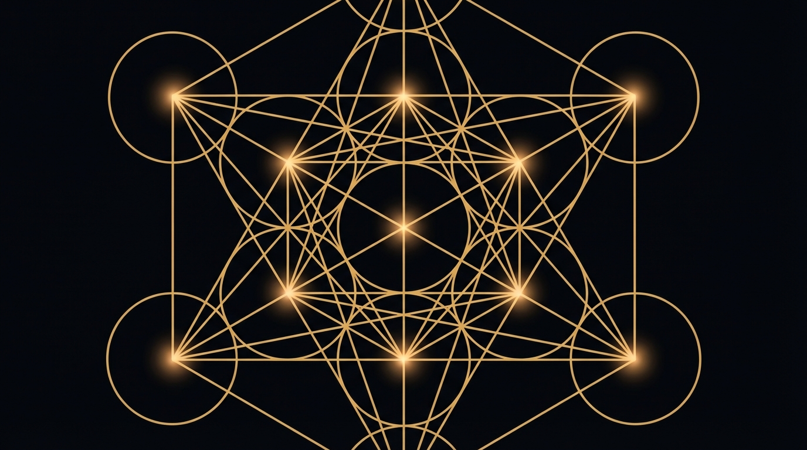
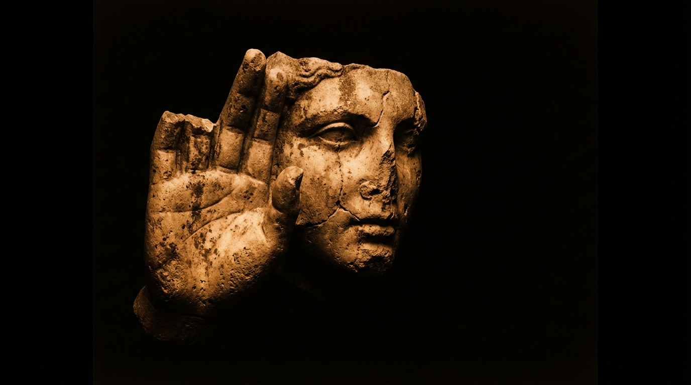
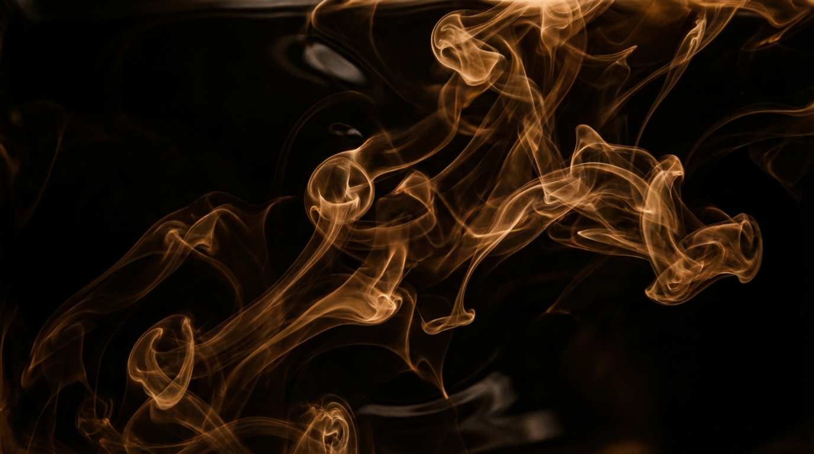
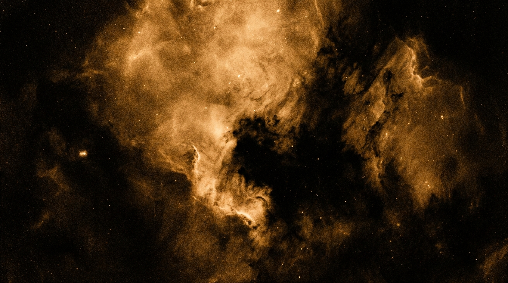
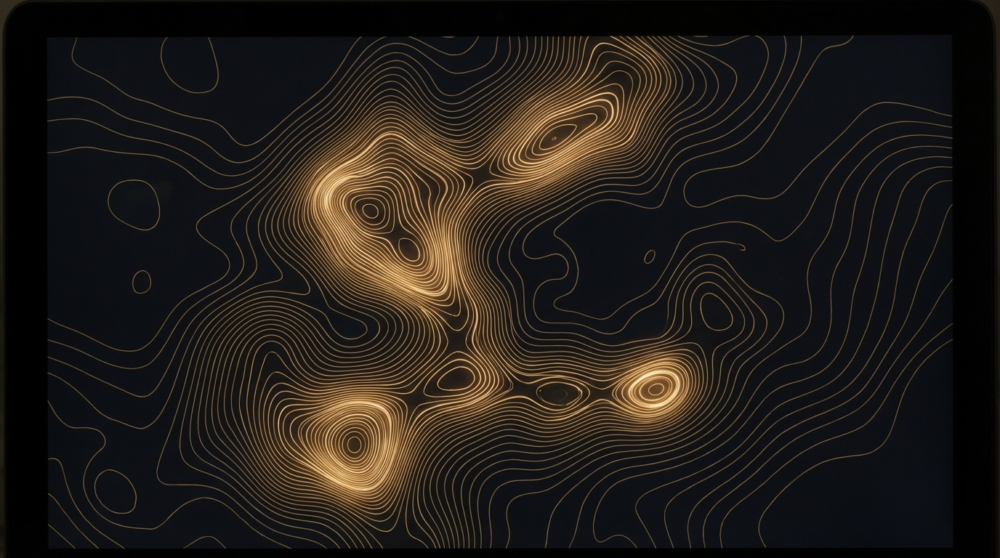
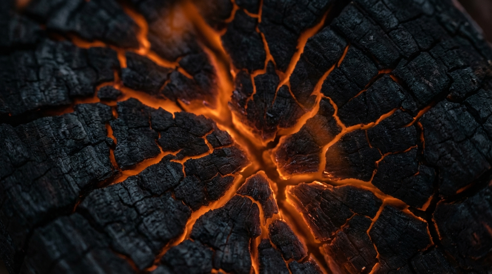
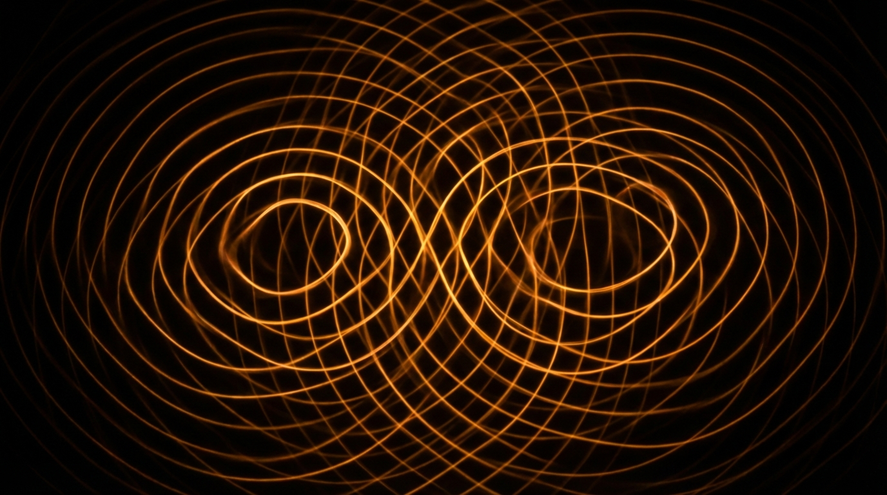
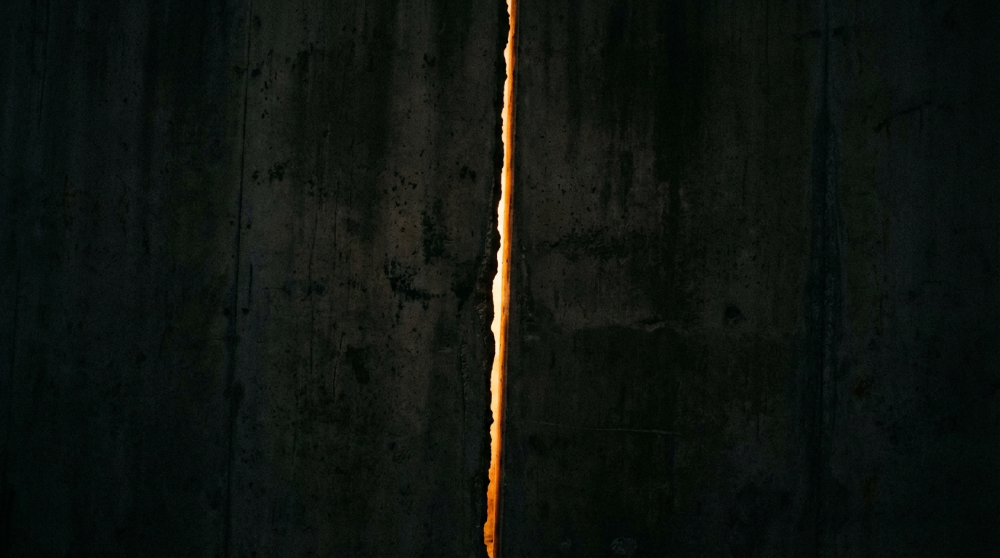

Glowing amber mandala/metatron's cube on black. Mathematical, precise, luminous linework.

Museum-lit stone fragment emerging from absolute darkness. Hiroshi Sugimoto aesthetic. High contrast.

Amber smoke dissolving in darkness. Organic, flowing, like consciousness dispersing.

Nebula/cosmic dust in warm monochrome. Cosmic scale, intimate feeling. Hubble reprocessed in amber.

Contour lines mapping inner terrain. Technical, contemplative. A map of something unmappable.

Glowing cracks in charcoal - neural pathways or river deltas. The beauty of something ending.

Cymatics/standing wave patterns. Mathematical but organic. Meditative, hypnotic.

Single crack of amber light in dark concrete. Extreme simplicity. Architectural contemplation.